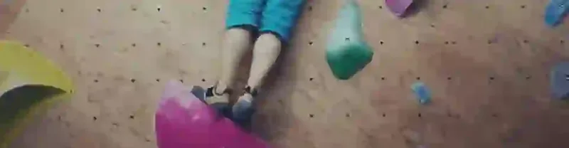
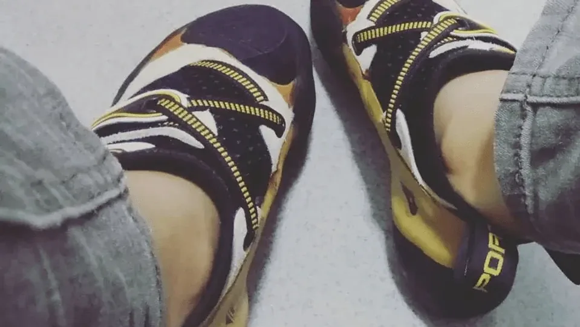

[日常] 攀岩的啟示

決定要用這個像國小作文的標題！記錄一下過程與感觸。
第一次是在2017年3月（或4月），因為工作夥伴L而接觸的。
如果將抱石視是一種運動，它不是一成不變的重複動作（像是跑步）、它富變化性，而且可以一個人進行（不需要有伴），很合我的胃口。突然，從來不運動的我，開始有了「運動」的嗜好。
7月，開始上初級技巧課，每週爬2-3次。
10月因其他原因受傷休息，原本抱石的行程變成跑診所，而練起來的力量在怠惰下如同過往雲煙。
12月學上攀確保，2018年1月拿到確保卡之後，因為太忙碌以一個月爬約1次的頻率直到6月。（幸好跟汽車駕照比起來，確保卡比較不容易變成廢紙）
每持續爬一段時間、又休息一段時間而打回原形的循環，「廢物」的標籤貼紙用力地貼在心上讓我痛苦不堪，又躲不了，因為是我自己貼的。每次循環我都會崩潰一次，L不厭其煩地說：「攀岩就是這樣。」
對，人生也是。
自問自答：「你有什麼好抱怨的？」「沒有，(看不開)都是我的問題。」

2018年8月，訓鞋，痛並快樂著。
2018年7月，我又開始爬了。這次，我會很小心地不受傷，也會小心地維持每週至少爬一次的頻率。
在生活上、心情狀態上的巨大起伏都沒有影響這個頻率的實踐（…膝蓋、腳踝、手腕的受傷也沒有），直到2019年的現在。
其實攀岩是一件相對公平的事，面對一條路線，只要能達到終點（完攀），沒有什麼方法是不可以的，這也反應在每個人的身體素質本來就不同，方法不同自然無差別對錯，不會有人批評你的身體，因為面對不同路線，有時身高高是優點，有時也會是缺點。
攀岩讓我學習誠實面對自己，身體素質就是如此、能力現階段就是如此、自己的恐懼如此，別人辦得到並不表示自己也可以，不評估、不誠實，就是落得受傷而已。
而關於恐懼，也學習著不逃避、直視恐懼的存在，怕摔、怕高、怕受傷、怕痛……。或者有時候逃避，但辨識出懼怕的本體是什麼、弱點是什麼，找方法克服，並在下次碰上時能勇敢挑戰一次。（也不要和別人比較恐懼，那不能比。）
攀岩提醒我，不要總數算著自己哪些個性要改（你的性格就像你的身體沒有好壞對錯，是一體兩面的），不要總責怪自己的錯與不完美（每個人都不完美啊），不要活在別人的標準裡，因為他們說「適合你/你可以/非你不可」就盡力去達到。要誠實地與自己對話，「你真的喜歡嗎？想要嗎？」認清後用時間、資源、健康……等好好評估，劃出可行性的標準線，避免用沒有根據的高標準要求自己。
以及，失敗並不丟臉，也沒人在意你的失敗。你可以放心地嘗試，也不需要有萬全的準備才可以出手，只要確保自己不會受到無法承受的傷害就好。（關於受傷，總是讓我想到「交換」，活著就是不斷地交換，冒著受傷的風險換一次嘗試的機會/經驗。）
攀岩的過程，反應了自己的焦慮其實多數是自己困住自己，訂過高的標準、總想回應別人的期待，不讓自己休息，又帶傷面對問題，惡性循環。
留言
電子郵件不會公開，只用來辨識留言者。第一次留言會先經過審核，之後同一個電子郵件的留言會直接顯示。本留言區以 Cloudflare Turnstile 防止垃圾留言。